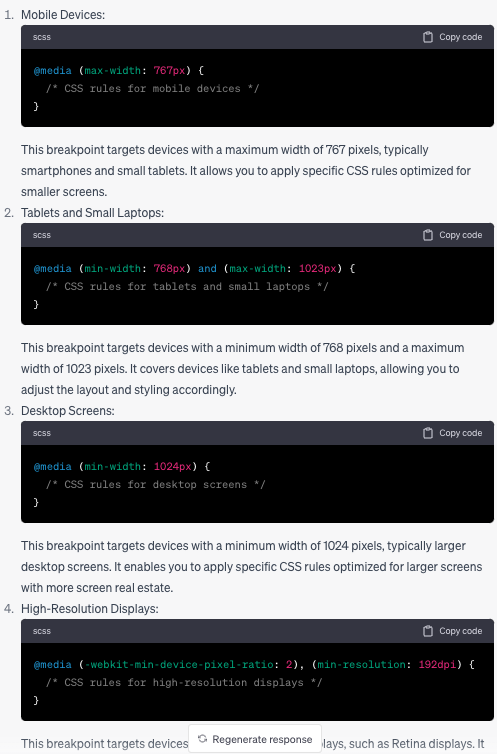

Responsive Design
Responsive design in CSS refers to the practice of designing and developing websites and web applications that can adapt and respond to different screen sizes, orientations, and devices.
It is aimed at providing optimal viewing across a wide range of devices, including desktop computers, laptops, tablets, and mobile phones.
Some key principles and techniques:
-
Fluid Grids: Use relative units (such as width: 20%) and CSS grid systems to create flexible and fluid layouts that can adapt to different screen sizes.
-
Flexible Images and Media: Scale and resize images and media elements (videos, embedded content) to fit in the available space while maintaining their aspect ratio.
-
Media Queries: Apply CSS rules based on specified device characteristics.
-
Breakpoints: Define specific screen widths at which the website needs to change its layout. This is often used in conjunction with media queries.

-
Responsive Typography: Use CSS to ensure that text is readable on different devices.
-
Mobile-first Approach: Design and develop websites by considering mobile devices as the primary target and then progressively enhance the design for larger screens.